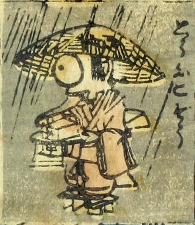

豆腐小僧；トウフコゾウ，豆腐；トウフ，小僧；コゾウ，一つ目；ヒトツメ，男；オトコ

豆腐小僧。雨が降る中、編み笠をかぶった子供が豆腐が載った盆を持っている。目玉は1つで大きく、着物をまとい、下駄を履いている。
著作者：芳盛／出典：親書誌：U426_nichibunken_0073：しん板化物尽し；シンパンバケモノヅクシ／日付：2006／資源識別子：U426_nichibunken_0073_0020_0000
Copyright (c)2010- International Research Center for Japanese Studies, Kyoto, Japan. All rights reserved.